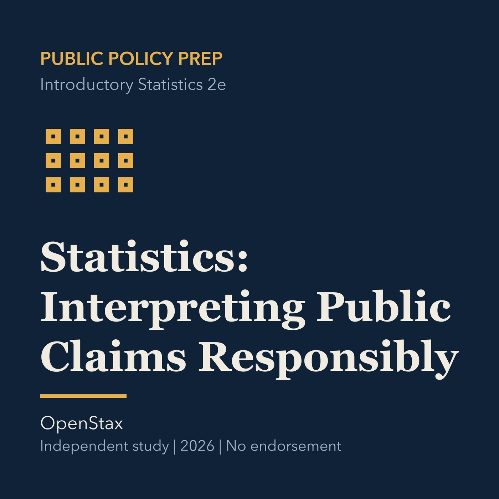

EPISODE 12
Statistics: Interpreting Public Claims Responsibly
Tests public claims using samples, center, spread, bias, uncertainty, and limits on causal inference.

- Stable GUID
09ccffbb-f493-5887-8836-6bb3ce8656a5- Release
- public-policy-prep-v2026.2
- SHA-256
1ea7a882f71f8341fce4fc44b54a2f0544913959807babed96e9c93c0a3ceec0